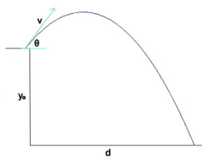

03 - Primeiros algoritmos
Neste roteiro iremos criar nossos primeiros algoritmos em Pseudo-Código e explorar sua "tradução" para Java. Conforme o roteiro avança haverá leituras (curtas) recomendadas sobre sintaxe e semântica de Java.
O esqueleto de um algoritmo
Todo algoritmo é formado pelo seguinte "esqueleto":
- Entrada:
- lista de parâmetros do algoritmo, incluindo tipos
- incluir também leitura de dados usando
LER_<TIPO>. - Inteiro
I(parâmetro) - String
S1(parâmetro)
- Saída:
- resumo da saída do algoritmo, incluindo possíveis
PRINT - pode conter mais de um item se ajudar a entender saídas que são condicionais
- devolve X caso A
- devolve Y caso contrário
- resumo da saída do algoritmo, incluindo possíveis
NOME_DO_ALGORITMO(I, S1)
# Atribuições e operações matemáticas
MAIS_UM := I + 1
# Saída de texto
PRINT(MAIS_UM)
# Entrada de dados
NOVO_INT := LER_INTEIRO()
NOVO_FLOAT := LER_FRACIONARIO()
NOVO_TEXTO := LER_TEXTO()
Atenção
Usamos := para atribuição e = para comparações.
Vamos aplicar esse formato para dois problemas simples e já implementá-los em Java.
Área do triângulo
Faça uma função que calcula a área de um triângulo de base b e altura h, ela deve receber os valores nesta ordem.
Exercício 1
Resposta
FRACIONÁRIO BFRACIONÁRIO H
Exercício 2
Resposta
A função devolve um FRACIONÁRIO com o valor da área do triÂngulo
Exercício 4
Lançamento de Projétil
Faça uma função que calcule a distância alcançada por um projétil lançado com velocidade $v$ em um ângulo $\theta$, de uma altura $y_0$. A distância é dada pela fórmula. Use $g=9.8$.
$$d = \frac{v^2}{2g} \left(1 + \sqrt{1 + \frac{2g y_0 }{ v^2 (\sin(\theta) )^2 }} \right) sin(2\theta)$$

Exercício 5
Resposta
FRACIONÁRIO V- velocidade em m/sFRACIONÁRIO THETA- ângulo do lançamentoFRACIONARIO Y0- altura do lançamento
Exercício 6
Resposta
A função devolve um FRACIONÁRIO com a distância do projétil até tocar o chão
Exercício 7
Resposta
Para facilitar a escrita do algoritmo o dividi em três partes, conforme se está antes, dentro ou depois dos parênteses.
Reparou que no algoritmo acima usei V * V? Isso é feito pois os operadores Python // e ** são específicos dessa linguagem e queremos descrever nossa solução de maneira independente de linguagem. Assim, vamos levar em conta os seguintes pontos ao escrever algoritmos:
- podemos usar a fórmula matemática mesmo ($V^2$)
- podemos ser explícitos e escrever tudo com detalhes
- no caso da divisão inteira, dividir dois tipos inteiro sempre causa uma divisão inteira.
Exercício 8
Condicionais
Expressamos a ideia de condicional em Pseudo código como abaixo. A tradução Java está na aba seguinte.
Atenção
Quando descrevemos ideias condicionais em Português normalmente usamos frases com o seguinte
- Faça XXX SE YY for verdade
Em Pseudo-código (e programação em geral) essa estrutura é invertida:
- SE YY for verdade ENTÃO faça XXX
Atenção
- Não se esqueça que em java os valores booleanos são
trueefalse(com letras minúsculas). - Em pseudo código usamos
=para comparar, já que a atribuição usa := - Em Java usamos
==para compararint,doubleeboolean - Se o tipo não for um dos acima, usamos o método
equals()
FizzBuzz
Faça uma função que recebe como entrada um número inteiro e testa a divisibilidade por 2 e 3. Se for divisível por 2, sua função deve retornar a string "Ins". Se for por 3, retorna "per". Porém, se for por 2 e 3 ao mesmo tempo retorna "Insper". Para outros casos, sua função deve devolver a string vazia.
Exercício 9
Resposta
INTEIRO N
Exercício 10
Resposta
A função devolve um STRING que depende da divisibilidade de N por 2 e 3
Exercício 11
Exercício 12
Jaca Wars
Você mora no sítio, e está em guerra com seu vizinho. Você dispõe de uma catapulta de lançamento de jacas, onde você consegue escolher a velocidade v e o ângulo $\theta$, em graus, de lançamento da jaca. Uma jaca quando cai se espalha por um raio de 2 metros. Seu alvo é a catapulta do vizinho, que está à 100 metros da sua.
Faça um programa que pede a velocidade e o ângulo de lançamento da sua jaca, e diz se ela cairá muito perto, muito longe, ou acertará o alvo. Considere que a jaca acerta o alvo se cai à uma distância do alvo menor que o seu raio de espalhamento. A fórmula da distância alcançada por um projétil (na ausência de efeitos de arrasto da atmosfera) é:
$$ d = \frac{v^2\sin(2\theta)}{g} $$
onde $g=9.8 m/s^2$. Os possíveis valores de retorno são 'Muito perto', 'Muito longe' e 'Acertou!'. Considere "Muito perto" se não chegou no alvo, e "Muito longe" se passou do alvo. O seu programa deve devolver exatamente essas strings, caso contrário ele será considerado errado (mesmo que a fórmula esteja correta).
Exercício 13
Resposta
FRACIONÁRIO V- velocidade de lançamentoFRACIONÁRIO THETA- ângulo de lançamento
Exercício 14
Resposta
O programa devolve:
- "Muito perto" se a java não chegou no alvo
- "Muito longe" se ela ultrapassou o algo
- "Acertou" se ela acertou o alvo
Exercício 15
Exercício 16
Loops (I)
Loops ENQUANTO representam a ideia de repetição até que uma condição seja verdadeira. Tipicamente usamos esse loop quando não temos certeza do número de vezes que o loop executará. Veja abaixo as sintaxes para pseudo-código e Java.
Vamos agora direto para exercícios que usem essa construção.
Quantos uns
Escreva uma função que recebe um número e devolve a quantidade de vezes que o algarismo 1 ocorre nesse número.
Exercício 17
Resposta
INTEIRO N
Exercício 18
Resposta
O programa devolve um INTEIRO com o número de vezes que o algarismo 1 aparece no número.
Exercício 19
Exercício 20
Loops (II)
Loops PARA CADA representam a ideia de repetição em um conjunto conhecido de valores. Tipicamente usamos esse loop para contagens ou para percorrer os elementos de uma coleção de valores. Veja abaixo as sintaxes para pseudo-código e Java.
Vamos agora direto para exercícios que usem essa construção.
Estimando o valor de pi
O valor de $\pi$ pode ser aproximado a partir da seguinte fórmula:
$$\pi = \sqrt{\frac{6}{1^2} + \frac{6}{2^2} + \frac{6}{3^2} + \dots + \frac{6}{n^2}}$$
Faça uma função que recebe o valor de $n$ e retorna o resultado da fórmula acima utilizando os $n$ termos.
Exercício 21
Resposta
INTEIRO N
Exercício 22
Resposta
O programa devolve um FRACIONÁRIO com o valor estimado de $\pi$.
Exercício 23
Exercício 24
Fatorial
Escreva uma função que recebe um número $n$ e devolve o valor de $n! = 1\cdot 2\cdot 3\cdot\dots\cdot n$.
Exercício 25
Resposta
INTEIRO N
Exercício 26
Resposta
O programa devolve um INTEIRO com o fatorial de N
Exercício 27
Exercício 28